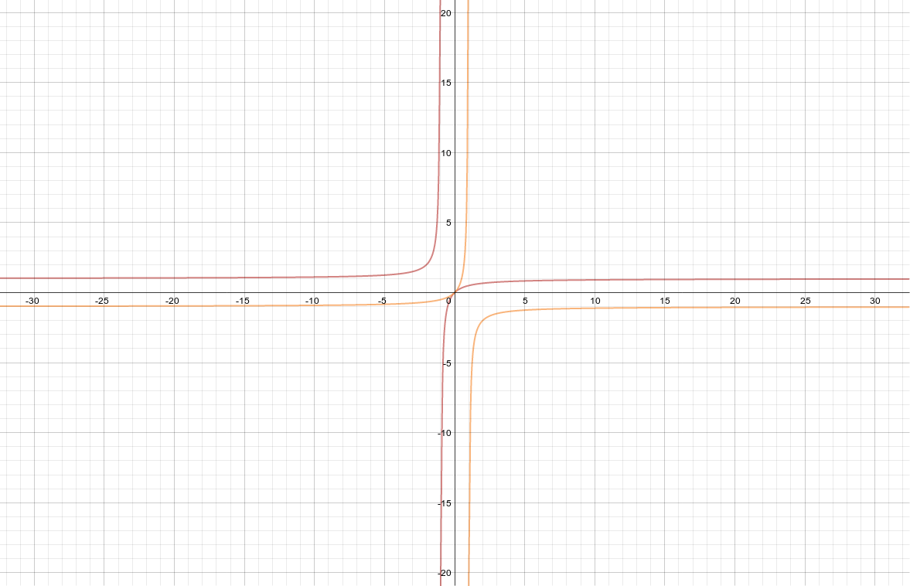

Function Composition And Inverse Functions¶

Function composition and inherited domain and range¶
\[f(x) = 2x + 3\]\[\text{Domain: } (-\infty, +\infty)\]\[\text{Range: } (-\infty, +\infty)\]\[g(x) = -x^2 + 5`\]\[\text{Domain: } (-\infty, +\infty)\]\[\text{Range: } (-\infty, 13]\]\[\text{find} (f \circ g)(x):\]\[(f \circ g)(x) = f(g(x))\]\[f(-x^2 + 5) = 2(-x^2 + 5) + 3\]\[f(-x^2 + 5) = -2x^2 + 10 + 3\]\[f(-x^2 + 5) = -2x^2 + 13\]\[(f \circ g) = -2x^2 + 13\]\[\text{Domain: }(-\infty, \infty)\]\[\text{Range: }(-\infty, 13]\]
Function decomposition¶
\[f(g(x)) = \sqrt{x^2 + 3}\]\[\text{find } g(x) \text{and} f(x)\]\[f(x) = \sqrt{x}\]\[(x) = x^2 + 3`\]
Parametric functions and how they relate to function composition¶
Inverse functions and inherited domain and range¶
Section 1.5: Example 4
Find an equation for \(f^-1 (x)\) if \(f(x) = {x \over (x+1)}\).
\[x = {y \over (y+1)}\]\[x(y + 1) = y\]\[xy + x = y\]\[xy - y = -x\]\[y(x - 1) = -x\]\[y = {-x \over (x-1)}\]\[y = {x \over (1-x)}\]\[f^-1 (x) = {x \over (1-x)}\]